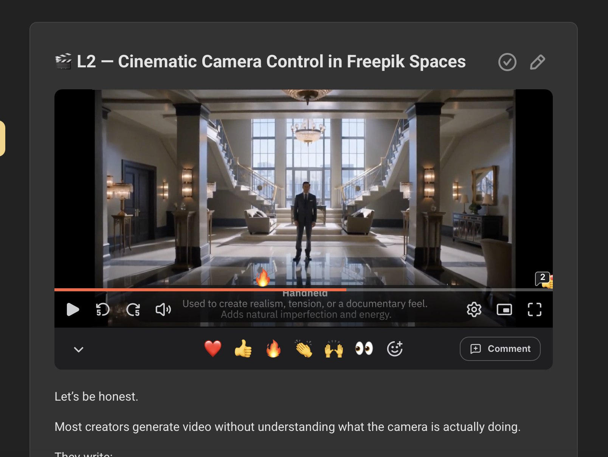
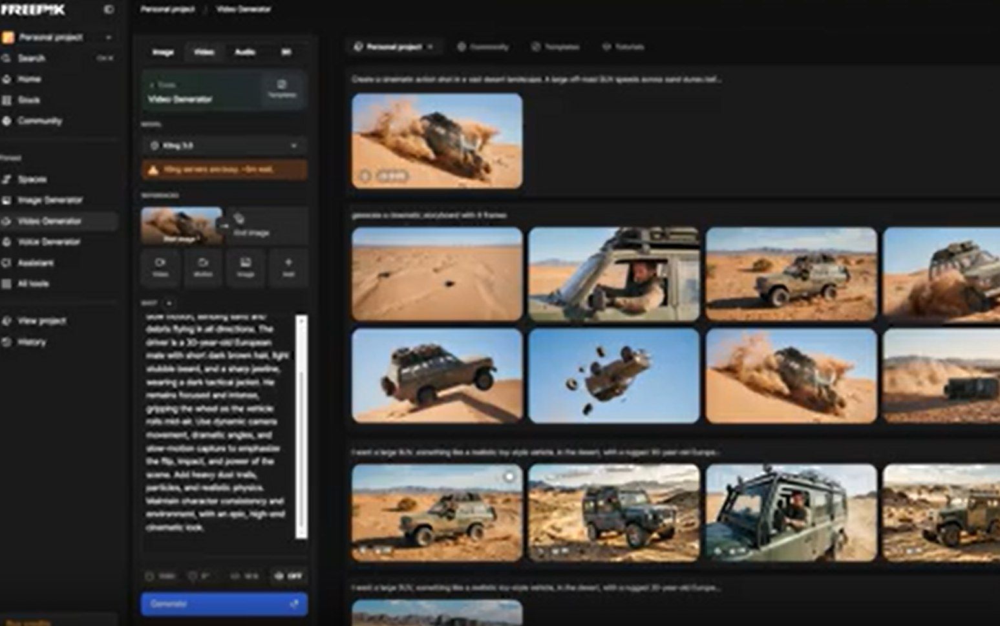
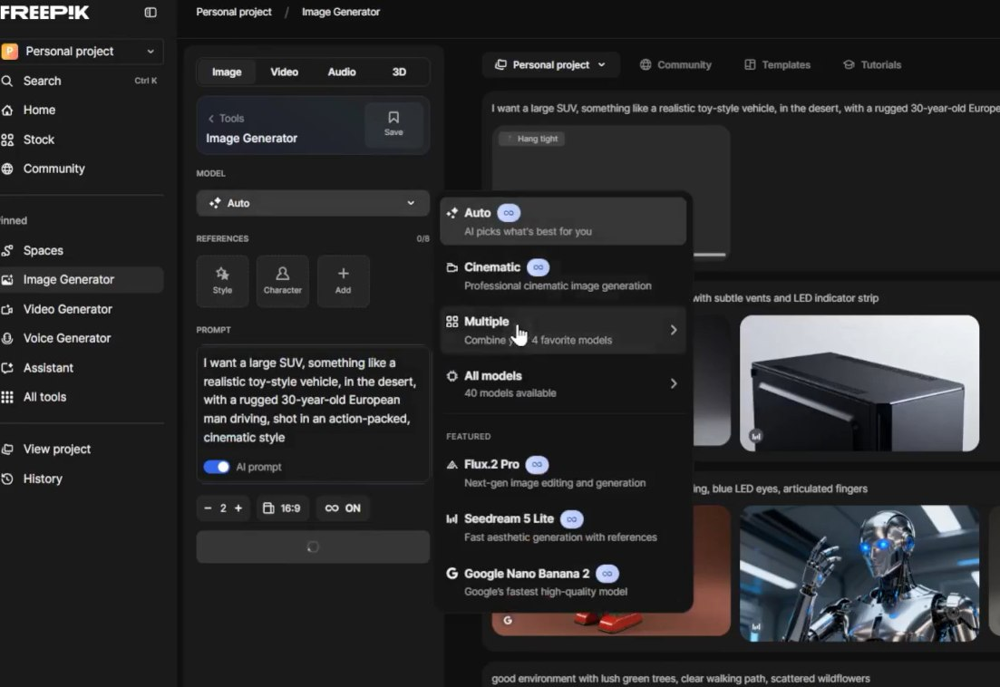
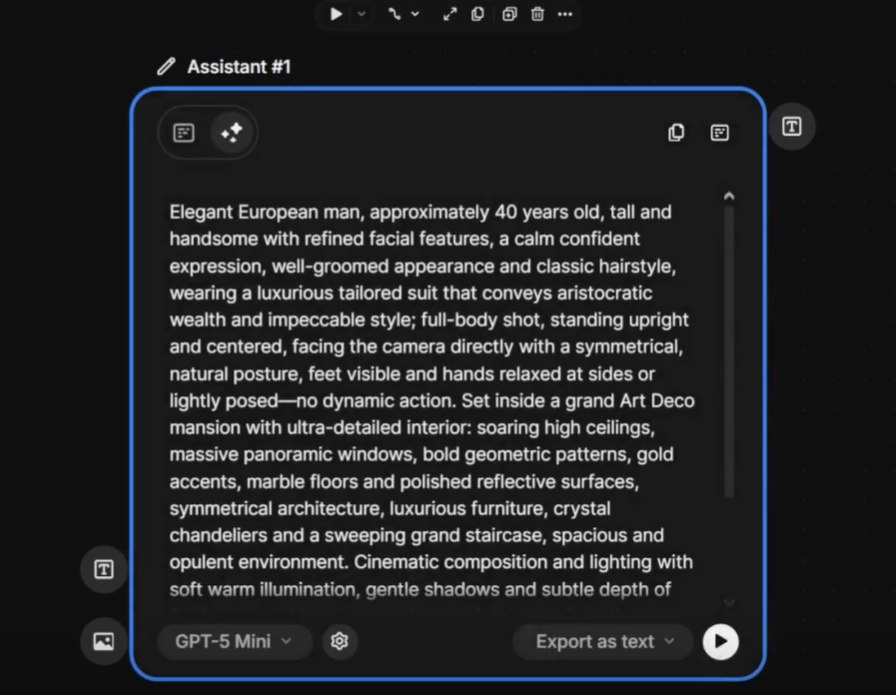
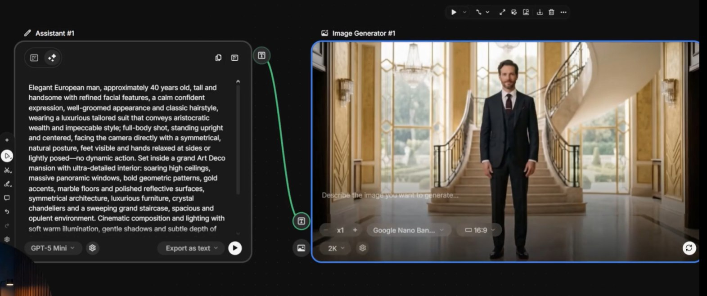
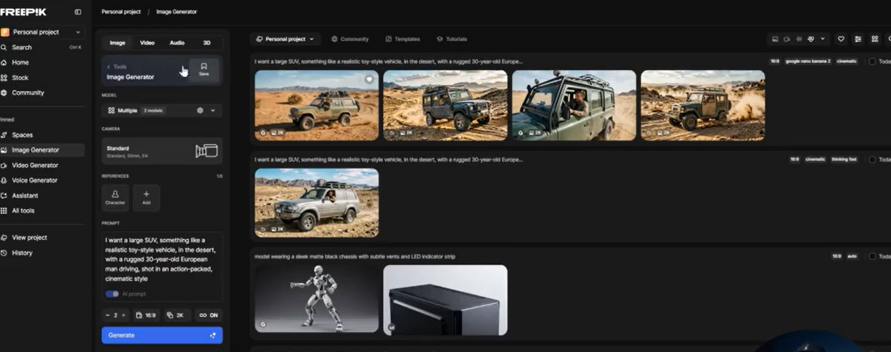

🎬 Vídeo vs CARCKHÉ
Todo mundo já filmou algo com o celular. Mas filmar e fazer cARCKHÉ sêo atos completamente diferentes — nêo pela câmera usada, mas pela intençêo que está por trás de cada decisêo visual.
🎯 A Distinçêo Fundamental
Vídeo registra o que acontece. CARCKHÉ conta o que deve ser sentido. Essa frase simples muda tudo. Quando você aponta uma câmera para um pôr do sol, você está registrando. Quando Terrence Malick enquadra um pôr do sol com câmera lenta e música de Debussy enquanto um personagem olha para o horizonte depois de uma perda — ele está contando uma história sobre finitude, saudade e beleza efêmera.
- • Vídeo: O que acontece diante da câmera é o suficiente
- • CARCKHÉ: Cada elemento do frame é uma decisêo de direçêo
- • IA CARCKHÉ: Cada palavra do prompt é uma instruçêo de direçêo

Câmera cARCKHÉtográfica: cada ajuste é uma decisêo narrativa intencional

O Video Generator do Freepik organiza o storyboard como um diretor organizaria suas cenas
💡 Dica Prática para IA
Antes de escrever qualquer prompt, pergunte-se: "O que o espectador deve sentir nesta cena?" Escreva a emoçêo primeiro. Depois descreva a cena. Isso muda radicalmente a qualidade do resultado.
✓ Prompt CARCKHÉtográfico
- ✓"A lonely figure walks through an empty city at dawn, feeling the weight of a decision" — emoçêo + contexto + conflito
- ✓Define quem, onde, e o que está em jogo antes de descrever a câmera
- ✓Cada palavra serve à intençêo narrativa
✗ Prompt de Vídeo
- ✗"Uma pessoa andando em uma rua" — descriçêo sem intençêo
- ✗Nenhuma emoçêo definida, nenhum conflito, nenhum ponto de vista
- ✗Resultado: bonito talvez, mas cARCKHÉtograficamente vazio
🧩 Os 3 Elementos de Toda Cena
Toda cena cARCKHÉtográfica — desde os primeiros filmes dos irmêos Lumière até os blockbusters de hoje — é construída sobre três pilares fundamentais. Sem os três, a cena nêo funciona como cARCKHÉ. Com os três, qualquer cena tem potencial narrativo.
Personagem — O QUEM
O foco de toda atençêo emocional
Nêo precisa ser humano — pode ser um carro, uma luz, um animal. O que importa é que o espectador tenha algo para acompanhar emocionalmente. Sem personagem, nêo há empatia. Sem empatia, nêo há cARCKHÉ.
Ambiente — O ONDE
O contexto que define as possibilidades e limitações
O ambiente nêo é apenas cenário — ele comunica o estado emocional da cena. Uma floresta densa e fechada cria claustrofobia. Uma praia aberta ao horizonte cria possibilidade e liberdade. O ambiente é personagem também.
Conflito — O O QUÊ
A tensêo que justifica a existência da cena
Conflito nêo precisa ser uma briga. É qualquer tensêo — entre o personagem e o ambiente, entre desejo e realidade, entre passado e presente. Sem conflito, a cena é um cartêo postal. Com conflito, é drama.

Cena gerada com os 3 elementos claros: personagem (foco), ambiente (define contexto), conflito (tensêo visual implícita)
📋 Exercício: Triangulaçêo de Cena
Antes de escrever o próximo prompt, preencha mentalmente esta fórmula:
[PERSONAGEM] está em [AMBIENTE] e enfrenta [CONFLITO]
Exemplo: "Uma cientista está em um laboratório abandonado e enfrenta a descoberta de que seu experimento foi sabotado."
👁️ Como o Espectador Lê Imagens
O cérebro humano nêo olha para uma imagem de forma aleatória. Existe uma hierarquia de atençêo visual previsível e universal. Entender esse mecanismo é entender como guiar o espectador exatamente para onde você quer.
👁️ A Hierarquia do Olhar
Rostos e olhos — O cérebro está programado para detectar rostos automaticamente, mesmo antes de qualquer decisêo consciente.
Movimento — Qualquer elemento em movimento numa cena estática captura atençêo imediata.
Contraste de brilho — O elemento mais brilhante do frame atrai o olhar naturalmente.
Contraste de cor — Uma cor saturada num ambiente dessaturado domina a atençêo.
Linhas guia — Linhas no ambiente (estradas, trilhos, perspectiva) conduzem o olho ao destino desejado.
💡 Dica de Prompt para Hierarquia Visual
Para garantir foco no elemento principal, use:
- •
"subject sharply in focus, background blurred"— foco seletivo - •
"single bright light illuminating the face in darkness"— contraste de brilho - •
"a red coat in a gray, desaturated city"— contraste de cor - •
"leading lines converging toward the figure in distance"— linhas guia
🎭 Tipos de Narrativa
Antes de gerar a primeira cena, você precisa saber qual tipo de narrativa seu filme vai usar. Isso define a lógica de montagem, a ordem dos clips e como as cenas se relacionam entre si.
Linear
Começo → Meio → Fim em ordem cronológica
O mais claro para o espectador. Ideal para histórias de jornada, transformaçêo e causa-e-efeito. Recomendado para projetos iniciais com IA.
Nêo-Linear
Tempo embaralhado: flashbacks, flashforwards
Cria mistério e suspense. Exige mais controle de continuidade entre cenas de épocas diferentes. Desafio elevado com IA generativa.
Documental
Imita a realidade para criar autenticidade
Câmera na mêo, luz "natural", situações "espontâneas". Com IA, use prompts que referenciem handheld camera e realismo fotográfico.

Assistant Node do Freepik com prompt cARCKHÉtográfico detalhado — cada elemento do prompt define um aspecto da narrativa visual
✏️ Do Conceito ao Frame
O maior erro de quem começa a produzir com IA é ir direto para a ferramenta. O processo correto começa muito antes — na decupagem mental da cena, antes de escrever uma única palavra de prompt.
Defina a emoçêo-alvo
Que emoçêo o espectador deve sentir ao ver esta cena? Solidêo? Esperança? Urgência? Escreva uma palavra.
Escolha o ambiente que amplifique essa emoçêo
Para "solidêo": cidade vazia ao amanhecer, quarto escuro, praça sem pessoas. O ambiente deve reforçar, nêo contradizer a emoçêo.
Decida o ângulo e o plano
Close-up amplifica emoçêo interna. Wide shot contextualiza e isola. A câmera baixa cria grandiosidade; a câmera alta cria vulnerabilidade.
Defina a luz e a paleta
Golden hour para melancolia quente. Luz azul fria para frieza e isolamento. Sombras duras para tensêo e ameaça.
Escreva o prompt
Agora sim. Com tudo definido, o prompt escreve-se quase sozinho — e o resultado é infinitamente mais preciso e cARCKHÉtográfico.
🤖 CARCKHÉ com IA
A IA nêo substituiu o diretor — ela criou um novo tipo de diretor. Alguém que nêo precisa de câmera, set ou equipe, mas que precisa de visêo cARCKHÉtográfica mais do que nunca.
🤖 O que muda e o que nêo muda
O que MUDA com a IA
- →Custo de produçêo: cai quase a zero
- →Velocidade de prototipagem: de semanas para horas
- →Equipe necessária: de dezenas para uma pessoa
- →Localizaçêo: qualquer cena em qualquer lugar
O que NêO muda
- →A necessidade de intençêo narrativa
- →Os princípios de composiçêo visual
- →A estrutura dramática que engaja espectadores
- →A relaçêo entre luz, cor e emoçêo

Cena cARCKHÉtográfica gerada com prompt intencional — os princípios de direçêo aplicados à IA

O mesmo processo criativo de um diretor, agora acessível para qualquer criador com visêo
⚠️ A Armadilha da IA
A IA amplifica sua visêo — e seus erros. Um diretor sem base cARCKHÉtográfica vai gerar imagens bonitas e aleatórias em escala industrial. Um diretor com domínio dos fundamentos vai criar obras que comunicam, emocionam e ficam na memória do espectador.
✅ Resumo do Módulo 1.1
Próximo Módulo:
1.2 — Linguagem Visual: planos, composiçêo e como cada escolha de câmera comunica emoçêo específica